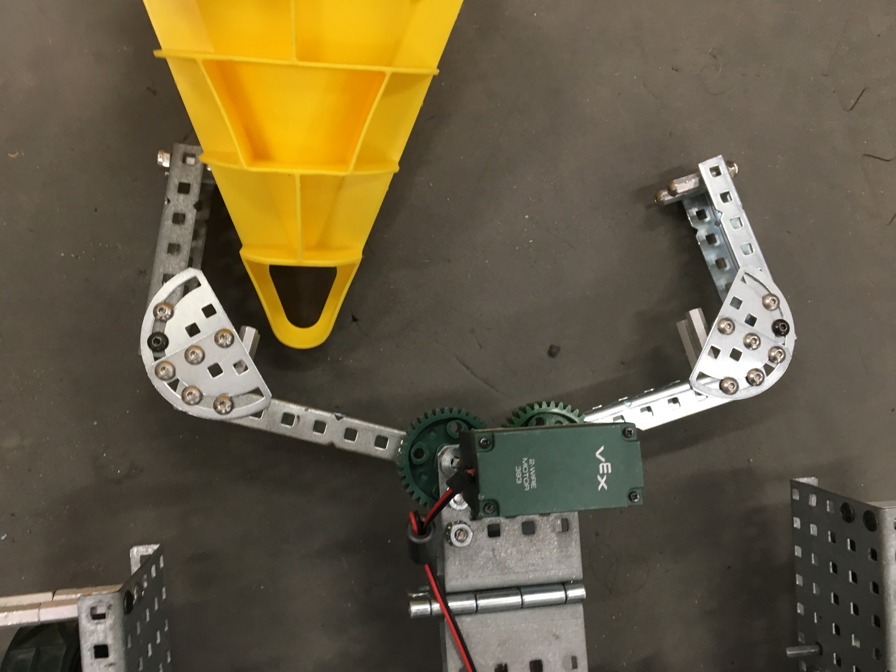

Meeting #1: Goals and initial design
Season Goals:
Build a simple robot.
Build a reliable robot.
Potential Designs:
This diagram shows two types of Chain lifts. The potential advantages of a chain
lift is that it is infinately scalable and can become very tall. The disadvantages
of a chain lift come in a few ways, Firstly they are slow and have a high torque requirement, a great disadvantage in
such a fast paced game. Secondly they have high mechanical complexity. We ruled out a cascade lift because it goes against
our design principal of "Build a simple robot"
We decided ultimately to go with a 4-bar like lift. This lift style has become common in this game because of its ability to keep the lift level even when beyond the range of a normal 4 or 6 bar.
This style lift we call a chain leveled lift because of the use of chain to keep the end of arm level. Furthermore, this style lift is only attached to the robot by 4 points, meaning there are enough attachment points to keep it stable but not so many it becomes needlessly complex.

Meeting #2: Refining Design Requirements
Mobile Goal Lift: In today's meeting it was decided that a mobile goal lift should be added to the robot after we had proven it to work well without one. We left enough space in the frame to add one but decided that it wasnt worth the effort at this time. The reason for this is that for every additional mechanism you add, the greater the chance of having a failure somewhere in the robot. End of Arm (EOA): We Explored two main styles of EOA for our robot. Firstly we explored a pneumatic EOA, We quickly decide that this would be far too cumbersome and heavy for use in this game. Furthermore, pneumatic mechanisms have limited actuations and loose force over time. We moved on to looking into A motor driven arm and came up with a compact, Scorpion like grabber that acts as the EOA now. 
Meeting #3: Testing
Today's meeting was all about testing the EOA. We wanted to know which style was the best fit for our robot. We looked into an EOA like the one Cully is pictured with here on last years robot, but found it to be far too big and could only get about 20 actuations. We abandoned this idea altogether after the unfavorable test results. The prototype we built for the motor claw worked so well we placed it on our robot. We began working on nailing down the frame design and came up with an integral lift frame-chassis concept. This was to keep the whole robot rigid and able to withstand a hours of use without breaking.
Meeting #4: Constructing the Framer
Today we did not have much to do but to begin constructing the frame and lift base combination. Today we also discussed initial lift power systems but we will be unsure of the acutal torque requirements until the robot is built.
Meeting #5: Building Challenges & code
Today began the tedious task of assembling the more complex parts of the robot. The way we decided to mount the arms created a substantial challenge to assemble but resulted in a very rigid lift. They use 2 lock bars which had unforseen alignment challenges and the chain holding the EOA Steady needs to be perfect to prevent twist. After several days of solid build sessions we completed the robot's main frame and adjusted it for rigidity and relaibility. This consisted of switching from the original 2 motor drive to a full on 4 motor drive after concerns about available torque. We also refined the way the lift mechanism worked to prevent the lift from inadvertantley tipping the robot over. At the same time, the gear ratio was increased to give the lift higher torque. After a few days of fine tuning. Cully was finally ready to work on the code. Initially, And for the first competiton, We only decided to run a driver control code, as autonmous would have taken too much time to get working reliably.
Code placeholder. Copy it in you dingus.
Meeting #6: Driving
IT WORKED FIRST TRY! When we powered on the cortex for the first time and placed the robot on the feild, we were totally expecting it to not be able to score and need serious adjustment. From the very beginning, the robot was entirely capable of scoring and driving. Much of this week has been spent in driving practice and also refining the issues we noticed. The robot currently uses motor power to hold the lift in place, This was imperiative because of the substantial weight of the EOA-Lift combination. We also adjusted the way the controls worked to make the lift make more sense after driving it for a few hours.
Meeting #7: Post Cape Elizabeth Debreif
The first part of the cape competiton went quite well, we placed 3rd in round robin. In the afternoon, things absolutely fell apart. After winning our first match by a large margin, our alliance proceeded to loose two and get knocked out. This was not the outcome we were hoping to acheive, but we learned alot and gathered several important lesson from it. Firstly, Marketing and choosing your ideal alliance before hand is a good thing to do. Secondly marketing to the top ranked teams and making your skills known is a good idea.
Meeting #8: Pre-Halldale and Mobile Goal Lift
Today we completed a mobile goal lift and spent time practicing with it. We decided to build a pneumatic mobile goal lift because of the relatively low size and weight. A low cycle count requirement and high speed. This was the perfect aplication for Pneumatics and we decided to go all in and use it. The biggest reason was the potential points that can be gathered by scoring a mobile goal in the 10 point zone. Hence the name of the game "In the Zone". Going into halldale we are optimistic about the potential to do well and hope that the improvements made make a difference when it comes to our acheivement on the feild.